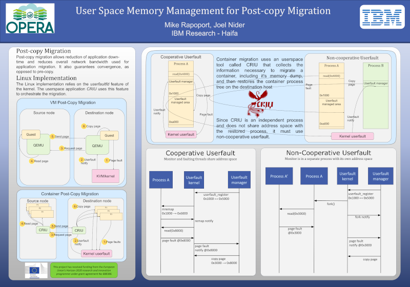
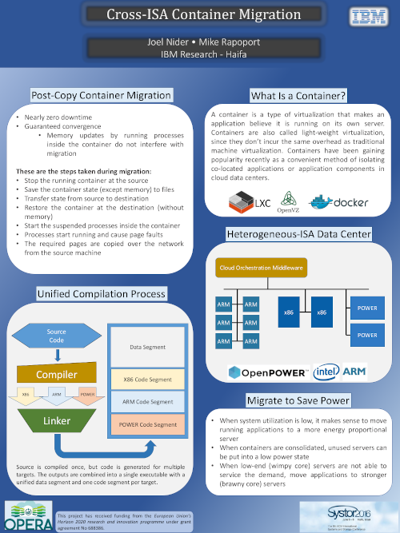
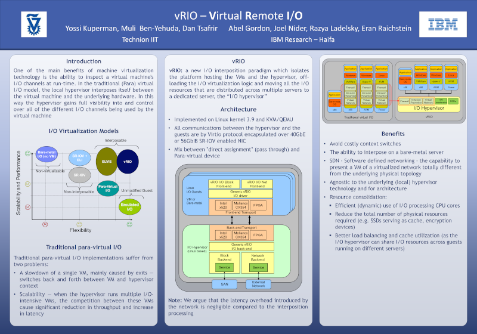

Systor 2019 - Address space isolation in the linux kernel
Monolithic kernel design mandates the use of a single address space for kernel data and code. While this design is easy to understand and performs well, it does not provide much in the way of protection from exploitable bugs in the interface. By dividing up kernel objects into areas of responsibility, we can introduce additional address spaces which will prevent information leakage, even in the case of a successful attack on the kernel. We are exploring several possible implementations with the goal of increasing security while minimizing the impact on performance.

Systor 2019 - Unleashing the Power of Unikernels with Unikraft
Recent research has shown that unikernels, lightweight virtual machines tailored to specific applications, have great potential in terms of performance, tiny boot times, small memory consumption, and a reduced trusted compute base. Creating and optimizing them, however, is currently a painful, time-consuming process that often needs redoing for every application. With Unikraft, we introduce a system for automatically building unikernels that drastically reduces this time without negatively impacting performance.
Systor 2017 - User space memory management for post-copy migration
Post-copy migration allows reduction of application down-time and reduces overall network bandwidth used for application migration. Migration can be used to help optimize several aspects of operations such as power efficiency. The userfault technology recently introduced to the Linux kernel allows post-copy migration of virtual machines. However, this technology is missing essential features required for post-copy migration of Linux containers.
{kind=link}
Systor 2016 - Cross ISA Container Migration
Joel Nider, Mike Rapoport IBM Research - Haifa
Containers are a convenient way of encapsulating and isolating applications. They incur less overhead than virtual machines and provide more flexibility and versatility to improve server utilization. Many new cloud applications are being written in the microservices style to take advantage of container technologies. Each component of the application can be encapsulated in a separate container, which enables the use of other features such as auto-scaling. However, legacy applications can also benefit from containers which provide more efficient development and deployment models.
{kind=link}
OpenPOWER Summit Europe 2016 - Container Migration In A Heterogeneous Datacenter
Joel Nider, Mike Rapoport IBM Research - Haifa; Gallig Renaud HPE; Craig Petrie Nallatech; Ashish Venkat UCSD
{kind=link}
Systor 2013 - vRIO: Virtual Remote I/O
Yossi Kuperman, Muli Ben-Yehuda, Dan Tsafrir Technion IIT Abel Gordon, Joel Nider, Razya Ladelsky, Eran Raichstein IBM Research - Haifa
Best Poster
{kind=link}